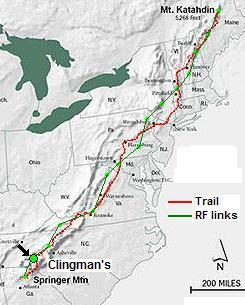
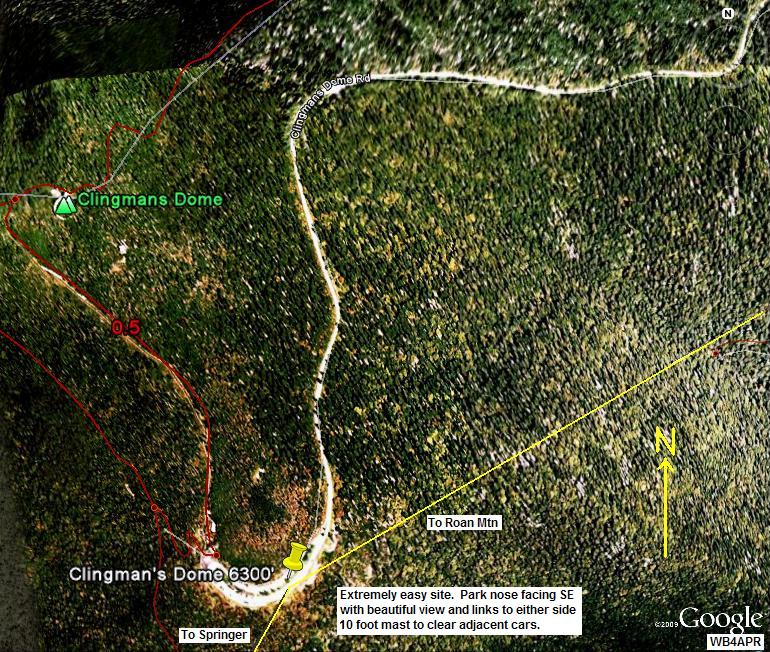
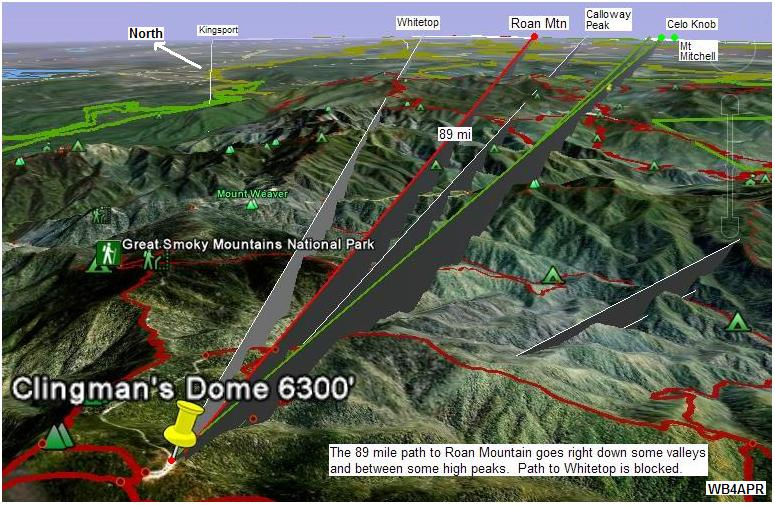
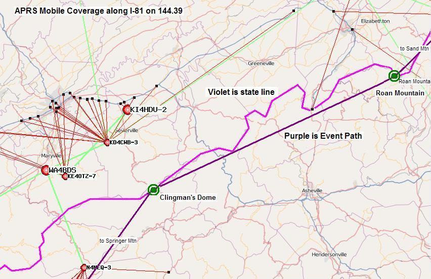

2014 SUCCESS! This year, K4AEC, Larry Ford took the lead at Clingmans after learning the details of how to set up the D700 for the event. It appears he was up by 1111 when his first packet was heard in the N4YH-10 log at Chatanooga. ALthough fears of rain showers preceeded the event, the weather turned out fine.
2013 Planning: Mike George N3MUY was leading the effort this year assisted by Larry Ford KG4GPJ. See the summary spread sheet.
2012 Planning: Lee Price, kd4gcf didn't make it in 2012 so I have to go find out who manned it.
2011 SUCCESS: William McKeehan had it covered for 2011 too! Clingmans was 100% successful with all relays and voice links and possibly scored the longest packet reported from Clingmans to Sam's Point, NY. Rain and shine, see the 2011 report.
2010 SUCCESS! William McKeehan, KI4HDU formed a team for 2010 with KF4QVI being a main contributor, with several other people playing a part; AJ4HV provided the shelter and W4VAB provided the pair of beam antennas that we used last year... See 2010 report. Back in 2009 about 8 hams showed up to make this site a success. They had good comms both ways and lots of public interest. See 2009 report.
See the Golden Packet plan. . This is one of the 15 hill-top sites from Georgia to Maine we man the 3rd Sunday in July in our annual attempt to relay a text message using hand-held radios the 2000 mile length of the Appalachain trail. This is a no impact Leave-No-Trace type of event of a few individuals at each site. . Other hikers equipped with APRS ham radios are welcome to participate.
Clingman's Dome being on the highest peak in the Great Smokey Mountains National Park, is probably the premier location along the AT as one of the highest visited public sites. It will provide high visibility for Amateur Radio during this event.
 ALTITUDE: . . . . . . . . . . . 6200 feet at the parking lot
POSITION:. . . . . . . . . . . . 35-33.33N / 083-29.69W (was 35-33.14N / 83-29.70W)
LINK NORTHEAST: . . . Roan MountainEasy drive up.
RF details
by John, KX4O
LINK SOUTHWEST: . . . Springer Mountain1 mi hike up.
RF details
by John, KX4O
VOICE REPEATER:. . . . .146.940 (knoxville)
ECHOLINK NODE: . . . . K2BHQ-R (400632)
TEAM LEADER: . . . . . . William McKeehan, KI4HDU. KI4HDU at comcast dot net (2010)
. . . . . . . . . . . . . . . . . . . . . . KF4QVI the main contributor (2010)
. . . . . . . . . . . . . . . . . . . . . . AJ4HV provided the shelter (2010)
. . . . . . . . . . . . . . . . . . . . . . W4VAB provided the pair of beam antennas (2010)
. . . . . . . . . . . . . . . . . . . . . . Hugh Morgan [hwmorgan * comcast dot net] (loaning equip 2010)
. . . . . . . . . . . . . . . . . . . . . . George Lane, KI4DSO. glane4 at thinkingguy dot com (has D700 and likes to hike - 2009)
. . . . . . . . . . . . . . . . . . . . . . Cliff, KD4GT.tn * gmail.com 2 hrs from Clingmans (2009)

COMMENTS: .
William McKeehan, KI4HDU (http://mckeehan.homeip.net) reports that things at Clingman's Dome went well. AJ4HV & K4RTW pulled a camper to the Clingman's Dome parking lot out of which we operated all day. The shelter was great especially when the rain came in this afternoon. KF4QVI and KG4DSP provided the radios (two TM-D700s), a computer (which we used to monitor most of the day) and antenna masts. I delivered two three-element beam antennas and a splitter provided by W4VAB. The setup was smooth and we were operational well before 11 AM. We monitored 445.925 and 144.340 for voice and also monitored the Mt Mitchell repeater (145.190). Around noon, we heard signs of life from Roan and Springer. Roan mountain reported problems communicating with any stations to their North. At 3PM, we gave up and shutdown.
Eddie Foust [wd4jem*bellsouth.net] in 2009 reported: Clingmans Dome is the highest point along the AT at 6643 ft and has a tall public observation tower. Access to the tower is via a paved trail 0.5 miles long with 400 ft elevation change from the Forney Ridge Parking lot. The parking lot is accessed via a 7.6 mile road from US 441 at Newfound Gap. The Dome is wooded with evergreens, however, many of the trees have died over the years leaving a scrubby appearance. The walk up observation tower has limited space but it helps clear the height above the vegetation.
Fortunately, the parking lot is located south of the peak at an elevation approx 6240 ft which is more than sufficient to make the two RF links. This parking lot has a good view toward Springer Mountain but is somewhat blocked by the ridge to the north and east. But a ray-trace on Google shows that the middle of the parking lot has clear paths that we need.
John Watkins [n0evh*sbcglobal.net] volunteered in 2009 to take some tests while in the Smokey Mtn National Park. He had a D710 and also a laptop with UI-View. He also carries several mapping softwares and GPS units since he is a field tester for Garmin. John N0EVH
The RF paths from Springer to Glingmans and from Clingmans to Roan are shown in the next two images


DETAIL LINK ANALYSIS BY KX4O: Be sure to follow the two RF links at the
top of this page to see the excellent and very detailed RF link analysis
performed for every link in this project by KX4O John Huggins.
Each RF link shows the terrain map
elevations, the AT trail in yellow, the RF path loss itself
including fresnel zones and finally a
statistical plot of the probabilities of link availability. We will very
much be looking at the results of this project compared to the pre-event
analysis and predictions. All of KX4O's links are shown on his
AT Links Page.


The map above shows the APRS coverage along I-81 in the vicinity of Clingmans and Roan mountain. This is one of the largest gaps in the 4000 mile long I-81 corridor. Maybe if we can raise the interest in APRS via this special event, we can get someone to put up a permanent digi along there.
Bob, WB4APR
See my other GENERAL page on APRS applications and Ideas on the AT
Return to the APRS HOMEPAGE or SiteMap.